Fotogalerie
Zde pár fotek z mých letošních výletů (Londýn, Budapešť, Miláno).
 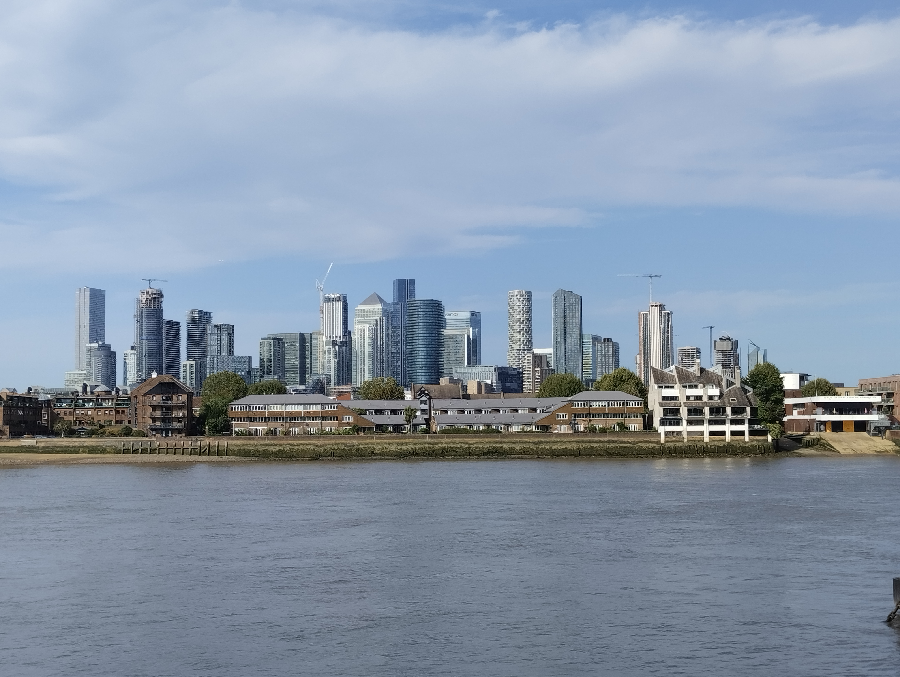
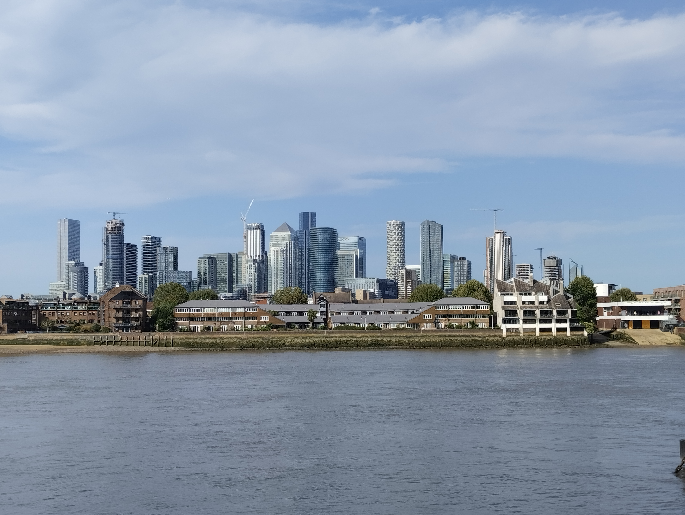
 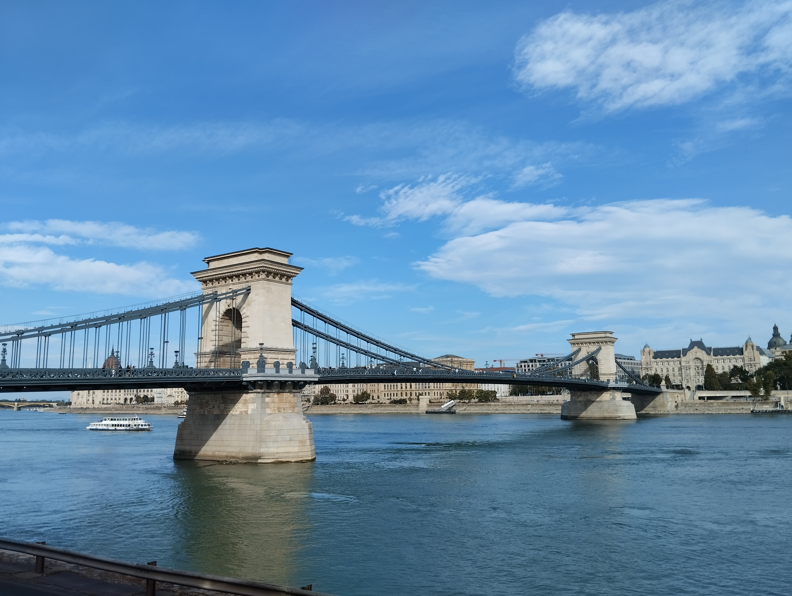
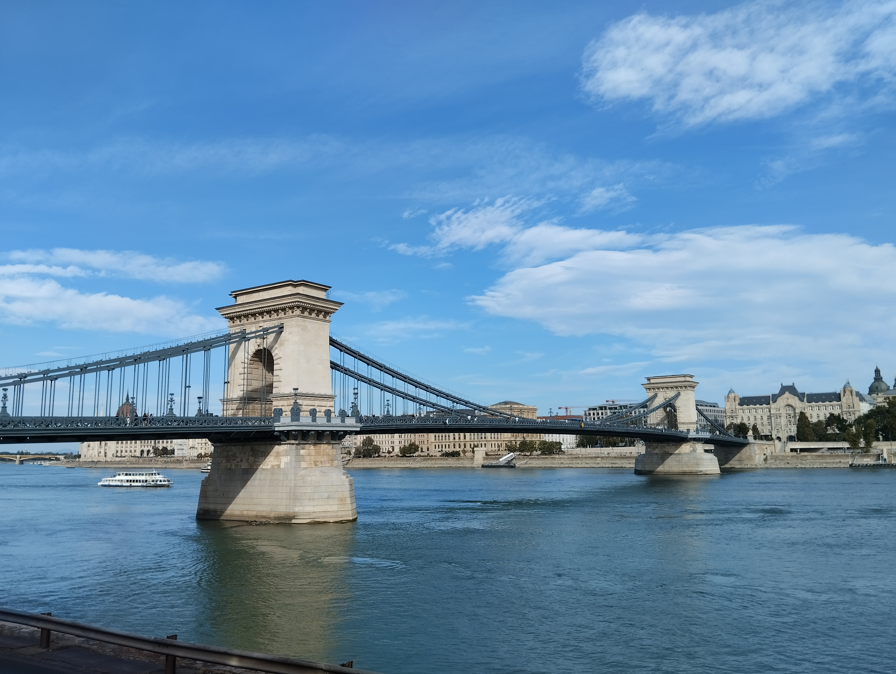
 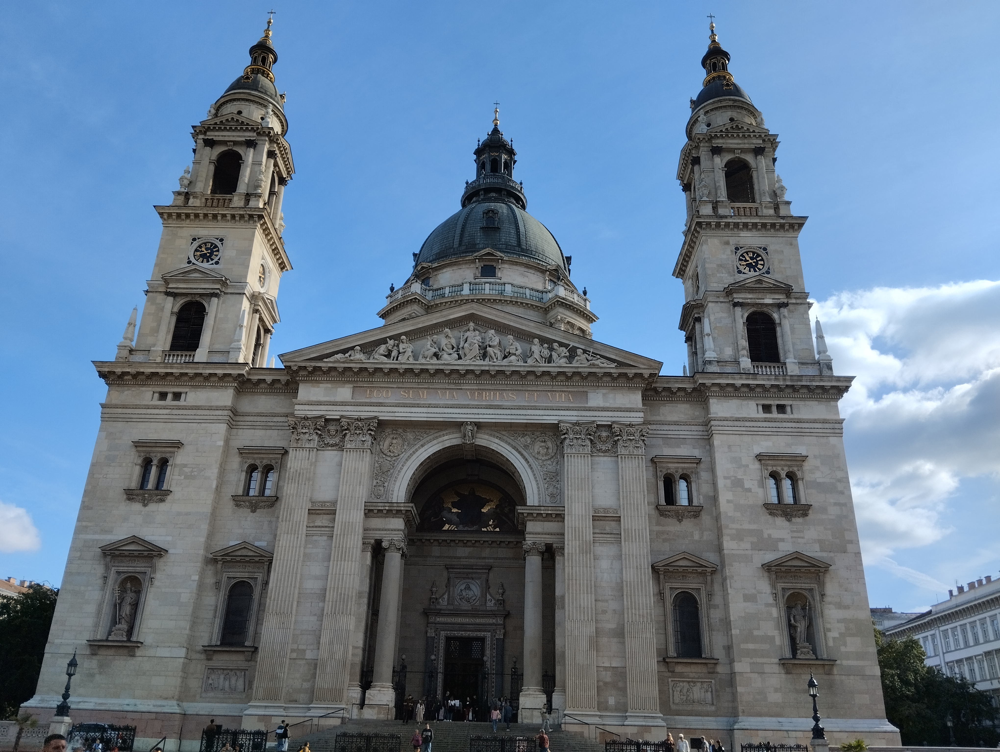
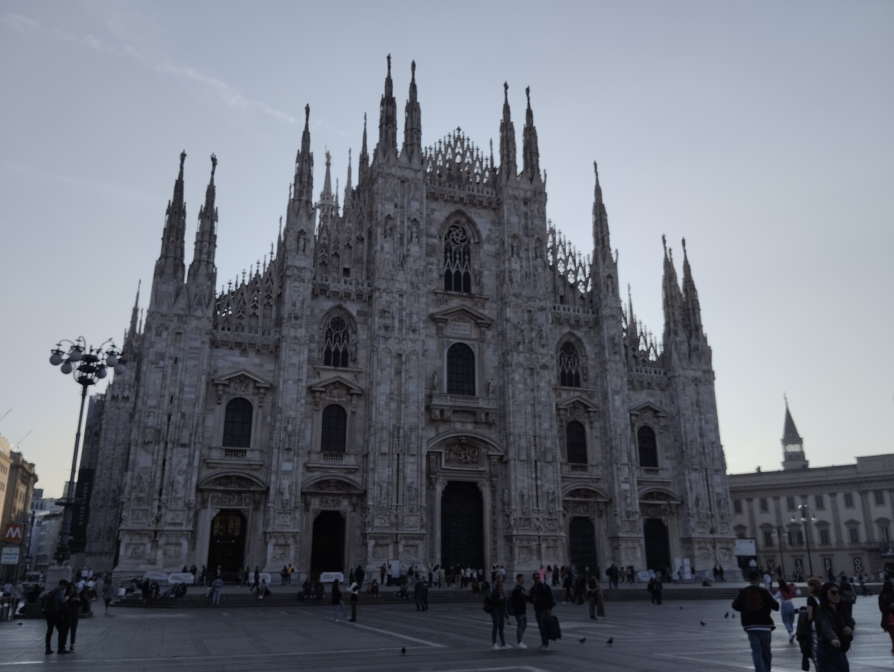
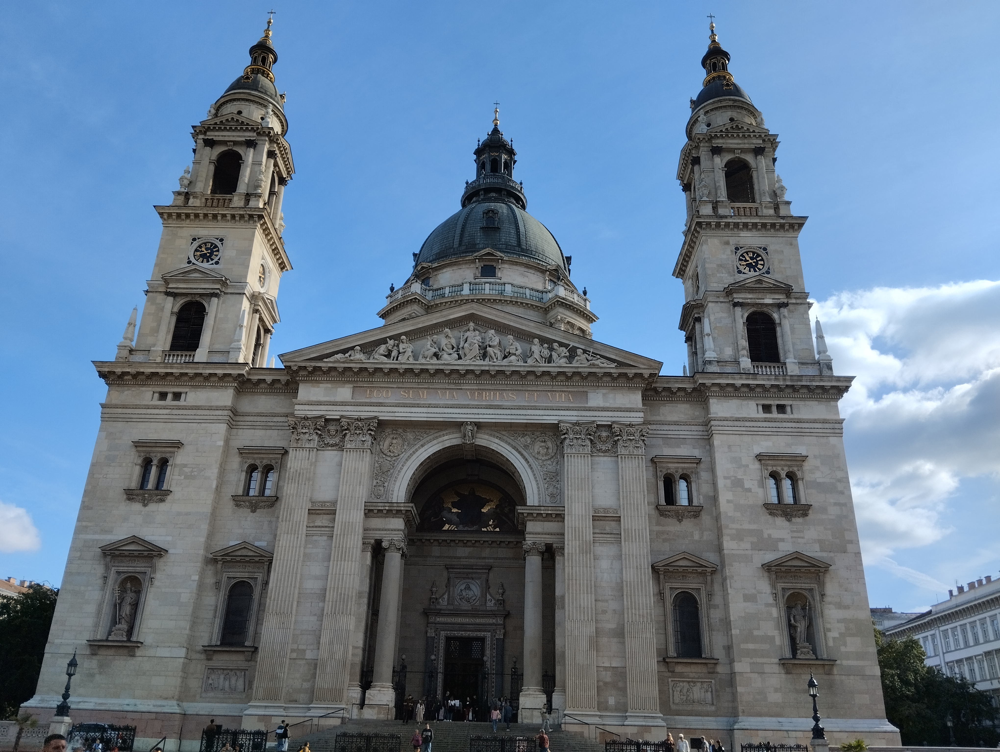
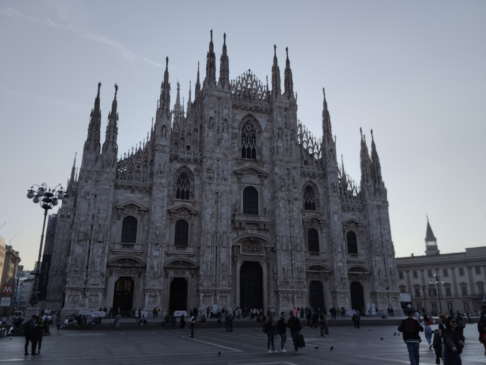


Jmenuji se Vlaďka a letos, ve svých 44 letech, jsem se odhodlala a začala cestovat za hranice své komfortní zóny. Nejprve to bylo absolvování různých IT kurzů, poté jsem začala oprašovat angličtinu a vše vyvrcholilo naprosto bláznivým rozhodnutím, že sama na vlastní pěst vycestuji za hranice...všedních dnů...ale tedy hlavně České republiky.
Cestování mě bavilo už dlouho, ale neměla jsem nijak velké ambice poznávat cizí země. Přeci jen je tolik míst u nás nebo na Slovensku, které mám na seznamu a ráda bych je poznala, ale protože jsem byla i dost zvědavá, jaký pokrok v angličtině jsem od jara udělala, zahraničí byla jasná volba a nutnost.
Zde pár fotek z mých letošních výletů (Londýn, Budapešť, Miláno).
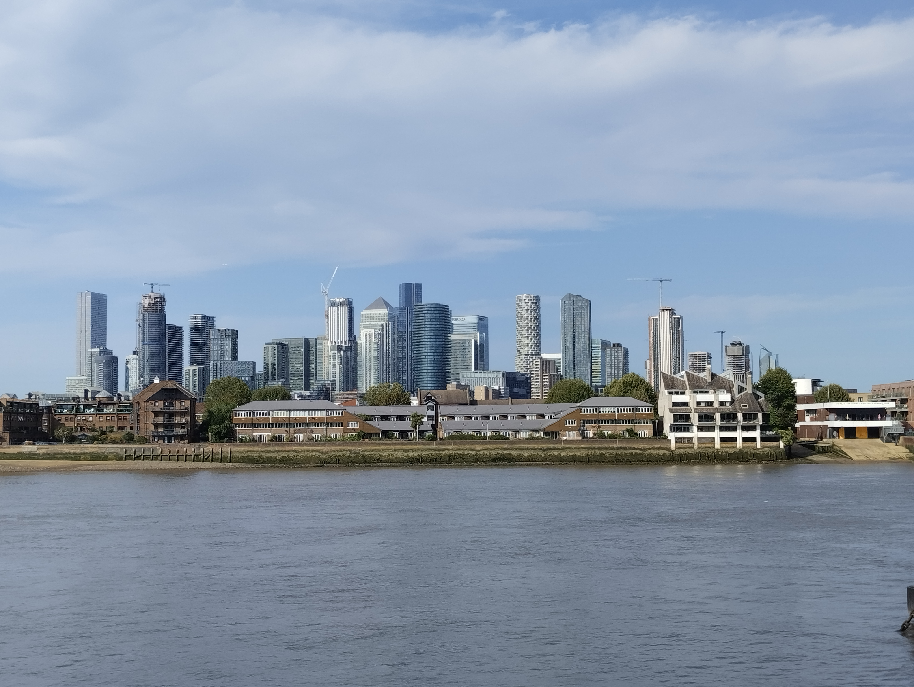
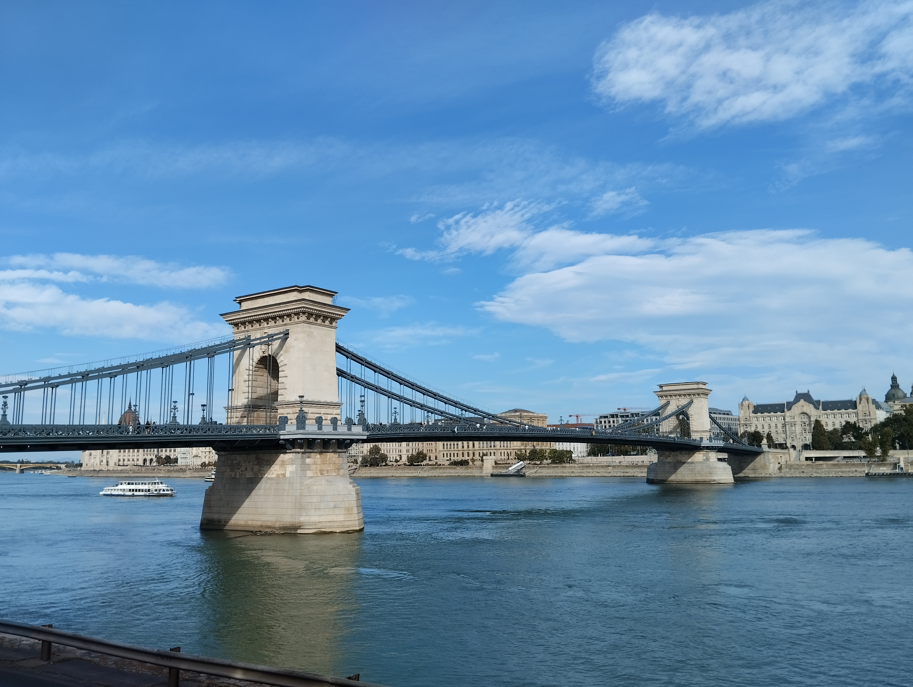
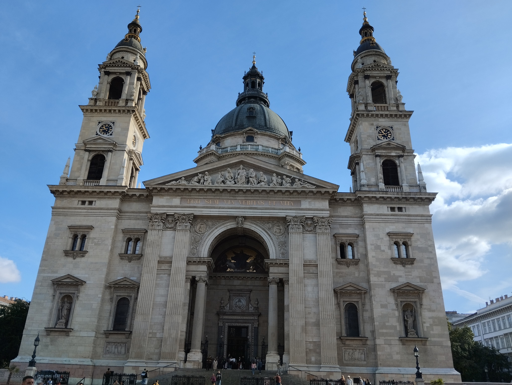
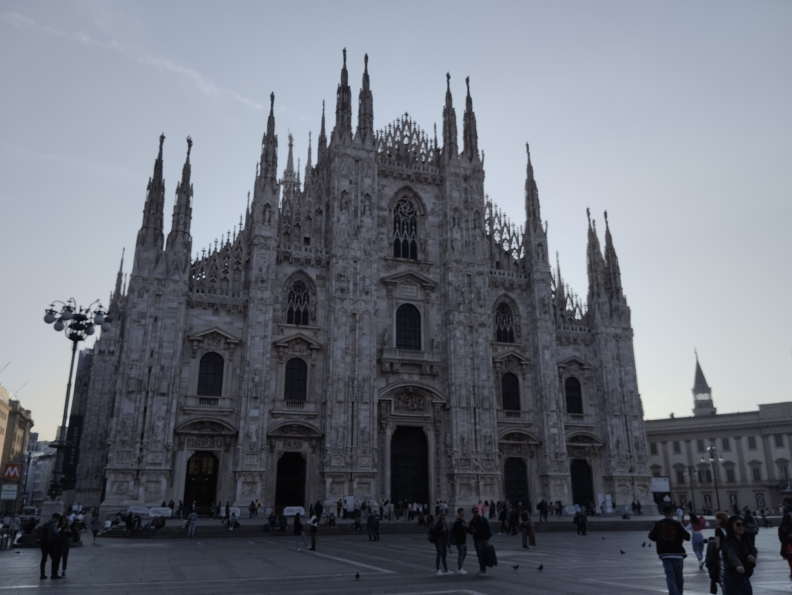
Prozatím jsem stihla tři destinace, ovšem ve 3 týdnech na přelomu září a října. V Londýně a Miláně jsem byla ubytovaná přes Airbnb a cestovala letecky. V Budapešti jsem byla ubytovaná v hotelu a cestovala vlakem. U všech cest bylo výchozím i konečným bodem Brno.
Zde pro orientaci celkové náklady. Zahrnují dopravu, ubytování, stravu a další související výdaje, jako je místní doprava, pojištění, suvenýry apod.
| Město | Počet nocí | Cena |
|---|---|---|
| Londýn | 4 | 17400 Kč |
| Budapešť | 1 | 5000 Kč |
| Miláno | 3 | 12700 Kč |
Moc ráda bych jednou šla alespoň část Stezky Českem, možná i Camino (pouť do Santiaga de Compostela), ale cesta je cíl, takže mi jde primárně o to chodit, protože to mě baví moc! Uvítám tipy, rady a návod, jak mít hodně peněz, abych si všechny sny splnila. Jsem na e-mailu, Facebooku i Instagramu.
Vlaďka
ulici nemáme
Heršpice
E-mail: hovka@seznam.cz
Mobil: +420 777 243 139